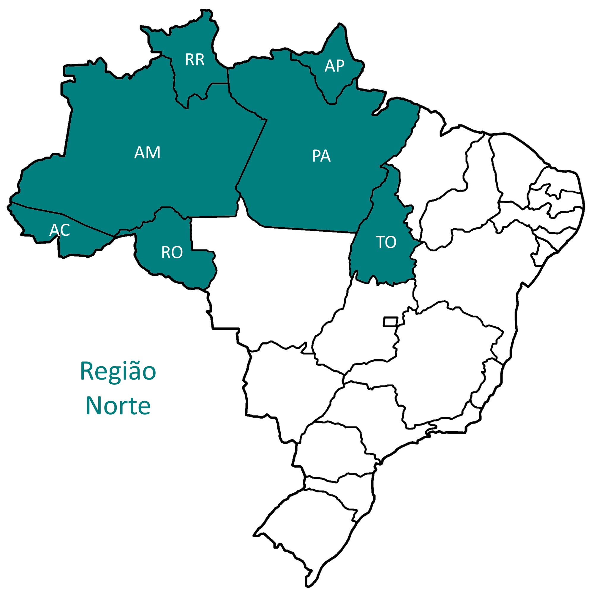
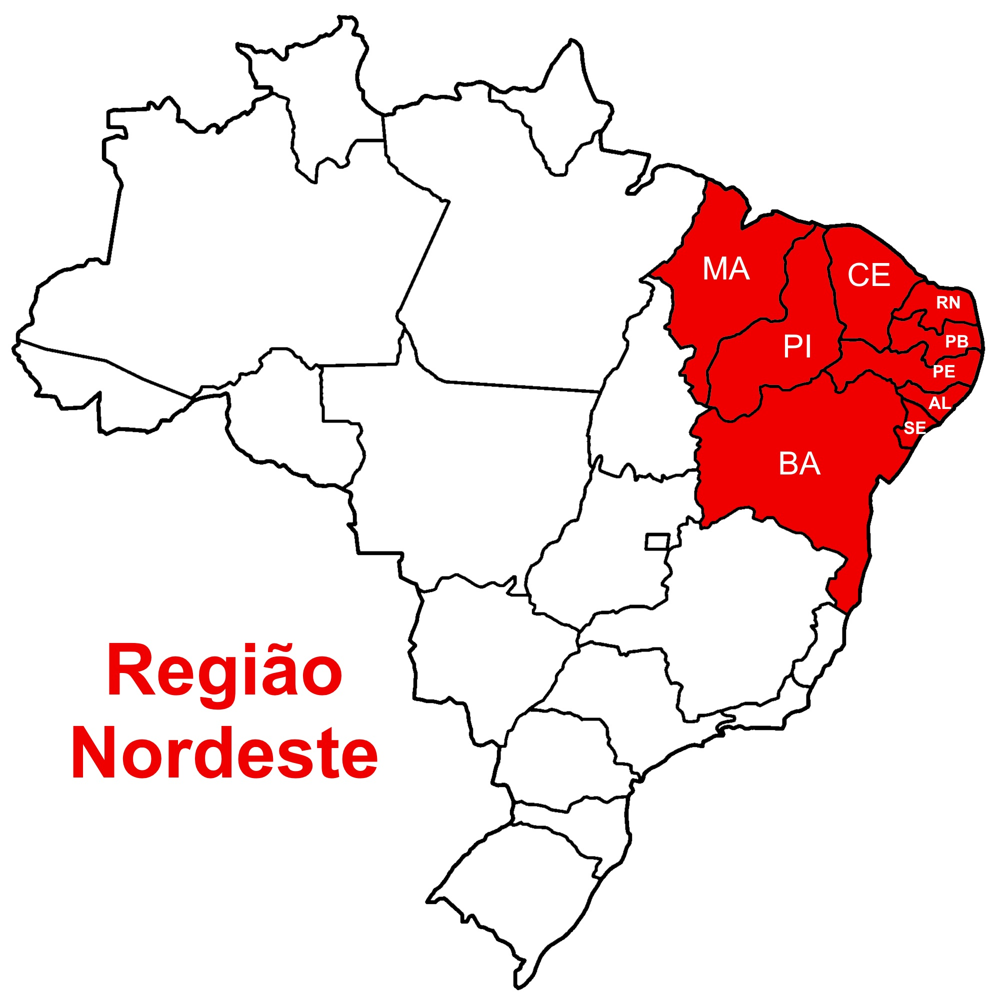
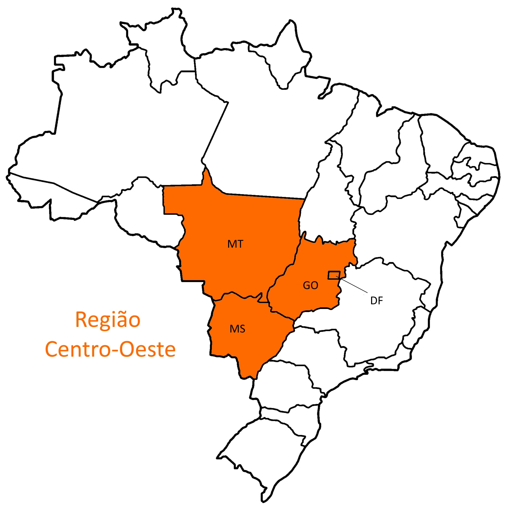
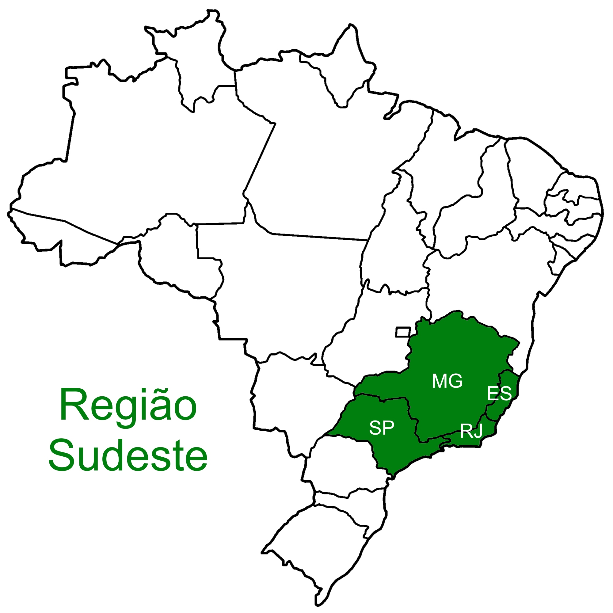

O Brasil é um país de dimensões continentais, dividido em cinco regiões:
Norte, Nordeste, Centro-Oeste, Sudeste e Sul.
Cada região possui características geográficas, culturais e econômicas distintas.
A divisão do Brasil em regiões é feita pelo Instituto Brasileiro de Geografia e Estatística (IBGE) e tem como objetivo facilitar a análise e o planejamento de políticas públicas, além de destacar as diferenças regionais do país.
Cada região do Brasil possui características únicas, como clima, relevo, vegetação, cultura e economia. Por exemplo, a região Norte é conhecida por sua vasta floresta amazônica e rios caudalosos, enquanto a região Nordeste é famosa por suas praias paradisíacas e cultura rica.
Além disso, cada região tem sua própria identidade cultural, com tradições, festas e culinária distintas. A diversidade regional do Brasil é uma das suas maiores riquezas e contribui para a riqueza cultural do país como um todo.
Em resumo, as regiões do Brasil são uma forma de organizar o território do país e destacar as diferenças regionais em termos de geografia, cultura e economia. Cada região tem suas próprias características únicas que contribuem para a diversidade do Brasil.

A região Norte é a maior do país e é conhecida por sua vasta floresta amazônica, rios caudalosos e diversidade cultural. Os estados que compõem a região são:
Acre, Amapá, Amazonas, Pará, Rondônia, Roraima e Tocantins.

A região Nordeste é famosa por suas praias paradisíacas, cultura rica e culinária diversificada. Os estados que compõem a região são:
Alagoas, Bahia, Ceará, Maranhão, Paraíba, Pernambuco,
Piauí, Rio Grande do Norte e Sergipe.

A região Centro-Oeste é conhecida por suas vastas planícies e pela presença do Pantanal, uma das maiores áreas alagadas do mundo. Os estados que compõem a região são:
Goiás, Mato Grosso e Mato Grosso do Sul.

A região Sudeste é a mais populosa do país e é o centro econômico do Brasil. Os estados que compõem a região são:
Espírito Santo, Minas Gerais, Rio de Janeiro e São Paulo.

A região Sul é conhecida por seu clima mais ameno e por sua forte influência europeia na cultura. Os estados que compõem a região são:
Paraná, Rio Grande do Sul e Santa Catarina.